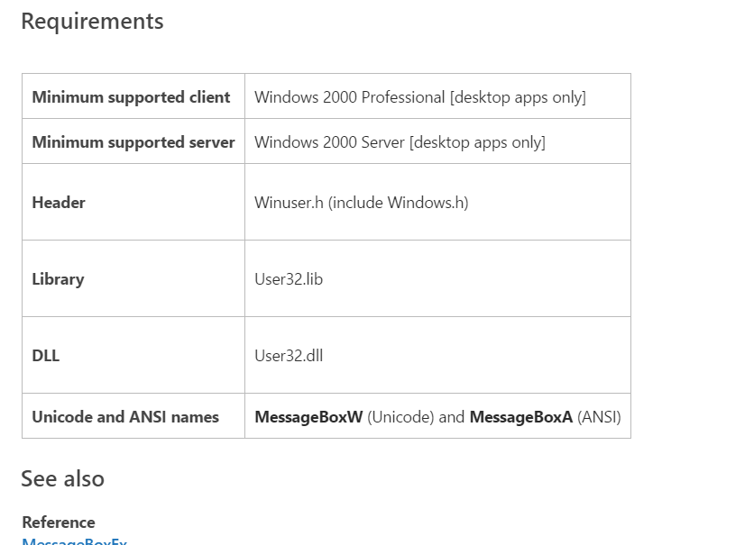
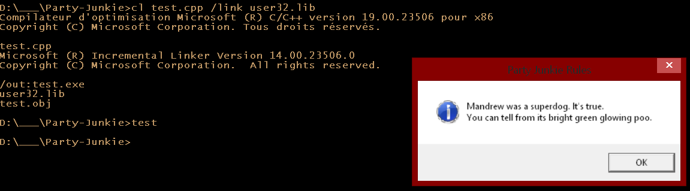

MessageBox
On va commencer par utiliser une fonction simple pour tester
que tout marche bien:
MessageBox.
#include <windows.h>
int CALLBACK
WinMain(HINSTANCE Instance,
HINSTANCE PrevInstance,
LPSTR CmdLine,
int CmdShow)
{
MessageBox(0,
"Mandrew was a superdog. It's true.\nYou can tell from its bright green glowing poo.",
"Party Junkie Rules",
MB_OK | MB_ICONINFORMATION);
return(0);
}
Maintenant essayons de compiler et ..
*BAM*
error LNK2019: symbole externe non résolu __imp__MessageBoxA@16 référencé dans la fonction _WinMain@16
Librairies
Si on déscend dans la documentation jusqu'à la section "Requirements":

On s'aperçois de tas de choses interresantes, l'une d'entre elle étant:
User32.lib
Un fichier .lib est un fichier librairie contenant la déclaration
de fonctions.
Dans ce cas précis, c'est utiliser pour signaler au linker
que c'est ok de compiler sans jamais avoir créer ces fonctions dans
notre code, que Windows va s'en occuper.
On va donc signaler au linker d'utiliser user32.lib
@echo off
mkdir ..\build
pushd ..\build
cl -Zi ..\code\win32_party.cpp /link user32.lib
popd

Score de dégeulasserie
Réaliser un quizz de 10 question (ayant pour réponse Oui/Non)
cherchant à déterminer votre score de dégeulasserie.
Les questions devrons être tirées au sort parmis une série d'une trentaine
de question.
- Vous avez porté plusieurs fois le même short plein de sueur à la salle de sport.
- Vous avez déjà porté le même jean quelques semaines d’affilée.
- Retourné votre boxer parce que vous aviez trop la flemme de faire une lessive.
- Avor fait un ~test d’odeur~ sur votre boxer.
- Reniflé à pleins poumons l’odeur de votre propre pet.
- Repoussé l’heure de la douche pour savourer votre propre odeur.
- Vous vous êtes déjà coupé les ongles des pieds et avez laissé les cuticules traîner partout.
- Vous vous êtes déjà curé le nez et en avez examiné le contenu, la texture, les poils.
- Quand il arrive que la crotte de nez refuse de sortir, vous vous mouchez vigoureusement sous la douche.
- Vous vous êtes mis les mains dans le pantalon, vous avez entouré vos testicules un instant, vous avez reniflé vos doigts sans prendre la peine de vous laver les mains après.
- On regarde des comédies romantiques. Seul. Pour être sûr que personne ne le sache.
- Après la grosse commission, on regarde si on a fait une belle pièce. Si c’est le cas, généralement on est fier de nous !
- Vous avez déjà exécuté le ~palper-rouler~ quand vos couilles vous grattaient.
- Vous avez déjà utilisé le déodorant d’un ami pour vous ~rafraîchir~.
- Ou utilisé du Febreze sur des draps sales pour faire comme s’ils ~étaient tout propres~.
- Vous avez déjà mangé tout en posant votre pêche.
- Vous avez pris une photo de ladite pêche et l’avez envoyée à tous vos amis dans un tchat groupé.
- Vous vous êtes tenu assez loin des toilettes pour vous entraîner à viser.
- Vous avez déjà trouvé un endroit où vous masturber après avoir été victime d’une gaule particulièrement retorse.
- Vous avez utilisé littéralement N’IMPORTE QUOI à portée de main pour nettoyer après la masturbation.
- On fantasme sur nos amies. Oui ... Toutes nos amies. Sans exception.
- On regarde sur internet si notre pénis est à la bonne taille.
- Dans la douche, on se mouche dans nos mains.
- Seul, on se cure le nez. Parfois on fait des boules. Parfois on les jette sur une cible.
- On efface nos historiques de navigation. Ou alors on passe en mode « navigation privée ».
- On pète sous la couette. Ensuite on la secoue.
- Chaque matin quand on se lève, on a la gaule. Et pour pisser, on s'assoit. Et puis on utilise la technique Tour de Pise pour ne pas heurter la porcelaine des toilettes.
- Laisser des gouttes d’urine sur le rebord de la cuvette.
rand
srand
sprintf